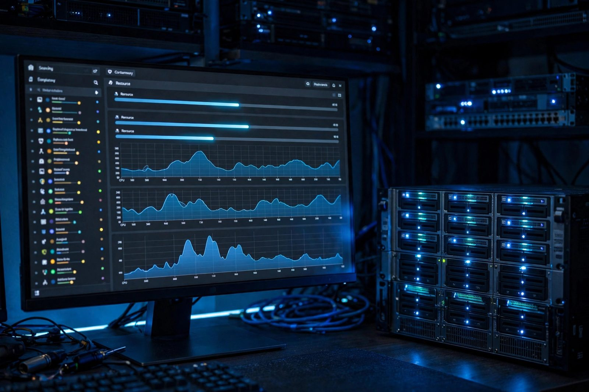

Proxmox Homelab
Full virtualization infrastructure for testing and development

Overview
This project is a bare-metal Proxmox VE hypervisor deployment: a single-host build that serves as the virtualization foundation for the standalone service hosts in the stack (DNS, email, Nextcloud, Immich, search). Proxmox VE combines KVM full virtualization and LXC container technology on a single platform managed through a polished web UI. The server runs on commodity x86-64 hardware with a ZFS mirror storage pool providing data integrity, transparent checksumming, and instant copy-on-write snapshots.
The network topology uses Linux bridge interfaces with VLAN-aware
configuration, allowing VMs and containers to be isolated into separate broadcast domains without
purchasing managed switches. Automated backups run nightly via vzdump with zstd
compression, and cloud-init VM templates enable rapid provisioning of new guests. Ansible playbooks automate post-provisioning hardening so every new VM is immediately
ready to receive a service. This single server currently hosts the DNS resolver, email server,
Nextcloud instance, Immich photo server, and the search engine.
Architecture
Tech Stack
- Proxmox VE 8, open-source hypervisor platform built on Debian
- KVM / QEMU, full hardware virtualization for Windows and mixed-OS VMs
- LXC, lightweight Linux containers sharing the host kernel
- ZFS, copy-on-write filesystem with mirror RAID, checksums, and snapshots
- Linux Bridges / VLAN, software-defined networking with VLAN-aware bridges
- Ansible, idempotent playbooks for guest provisioning and hardening
- vzdump, Proxmox native backup tool with zstd compression and rotation
Build Process
Install Proxmox VE on Bare Metal
The Proxmox VE ISO is written to a USB drive and booted on the target machine. During installation, ZFS RAID-1 is selected so the OS itself is mirrored across two drives. The management IP, gateway, and hostname are configured at this stage. After first boot, the enterprise apt repository is replaced with the no-subscription community repository to avoid paid-tier update errors.
# Write ISO to USB from another machine
dd if=proxmox-ve_8.2-1.iso of=/dev/sdX bs=4M status=progress conv=fdatasync
# After first boot: switch to community repository
echo "deb http://download.proxmox.com/debian/pve bookworm pve-no-subscription" \
> /etc/apt/sources.list.d/pve-community.list
# Disable enterprise repo
rm /etc/apt/sources.list.d/pve-enterprise.list
apt update && apt full-upgrade -y
rebootConfigure ZFS Storage Pool
Additional data drives are formed into a ZFS mirror pool named tank for
redundant VM and backup storage. ZFS ARC memory usage is capped to prevent it from
consuming all available RAM and causing OOM kills in guest VMs. Two datasets are created
with separate mount points.
# Create ZFS mirror pool across two data drives
# Use stable /dev/disk/by-id names, not bare /dev/sdX (which can reorder on reboot)
ls /dev/disk/by-id/ # find your drives, then substitute below
zpool create -f tank mirror /dev/disk/by-id/ata-DRIVE-A /dev/disk/by-id/ata-DRIVE-B
# Create datasets
zfs create tank/vmdisks
zfs create tank/backups
# Cap ARC at 4 GB (tune to ~25% of total RAM)
echo "options zfs zfs_arc_max=4294967296" > /etc/modprobe.d/zfs.conf
update-initramfs -u
# Verify pool health
zpool status tank
zfs list -r tankSet Up Network Bridges and VLANs
vmbr0 bridges the physical NIC for internet-routed traffic.
vmbr1 is a VLAN-aware internal bridge for inter-VM communication, enabling
each VM port to carry a VLAN tag set from the Proxmox web UI without requiring external
managed switch configuration.
# /etc/network/interfaces
auto lo
iface lo inet loopback
auto enp3s0
iface enp3s0 inet manual
auto vmbr0
iface vmbr0 inet static
address 192.168.1.10/24
gateway 192.168.1.1
bridge-ports enp3s0
bridge-stp off
bridge-fd 0
auto vmbr1
iface vmbr1 inet manual
bridge-ports none
bridge-stp off
bridge-fd 0
bridge-vlan-aware yes
bridge-vids 2-4094
# Apply without reboot
ifreload -aCreate VM and LXC Templates
A Debian 12 cloud-init VM template is built from the official generic cloud image. This template includes cloud-init drive attachment so that SSH keys and hostname are injected on first boot. LXC container templates are downloaded from the Proxmox template repository for fast container provisioning.
# Download Debian 12 cloud image
wget https://cloud.debian.org/images/cloud/bookworm/latest/debian-12-genericcloud-amd64.qcow2
# Create template VM (ID 9000)
qm create 9000 --name debian-12-tmpl --memory 2048 --cores 2 \
--net0 virtio,bridge=vmbr0 --scsihw virtio-scsi-pci
qm importdisk 9000 debian-12-genericcloud-amd64.qcow2 local-zfs
qm set 9000 --scsi0 local-zfs:vm-9000-disk-0 --boot order=scsi0
qm set 9000 --ide2 local-zfs:cloudinit --serial0 socket --vga serial0
qm set 9000 --sshkey ~/.ssh/id_ed25519.pub --ciuser admin
qm template 9000
# Download and list LXC templates
pveam update
pveam download local debian-12-standard_12.7-1_amd64.tar.zstConfigure Automated Backups
Backup jobs are configured via /etc/pve/jobs.cfg and exposed in the Proxmox
web UI under Datacenter → Backup. Backups run nightly at 02:00 using zstd compression
in snapshot mode (no downtime). Retention uses prune-backups keep-last=7 on
the storage definition for a weekly rolling window. Note that Proxmox storage IDs cannot
contain slashes, so the tank/backups dataset is exposed as the storage ID
tank-backups.
# Define a backup storage ID pointing at the dataset
# /etc/pve/storage.cfg (Proxmox storage IDs cannot contain slashes)
dir: tank-backups
path /tank/backups
content backup
prune-backups keep-last=7
# /etc/pve/jobs.cfg (managed by Proxmox)
vzdump: job-nightly
schedule 0 2 * * *
storage tank-backups
compress zstd
mode snapshot
all 1
# Manual backup of a specific guest
vzdump 101 --storage tank-backups -compress zstd -mode snapshot
# List existing backup archives
pvesm list tank-backups
# Restore from backup
qmrestore /tank/backups/dump/vzdump-qemu-101-*.vma.zst 200 --storage local-zfsDeploy Services as LXC Containers
Services are provisioned as unprivileged LXC containers cloned from the Debian template.
Each container receives a static IP. Routed guests attach to vmbr0 with the
LAN gateway; VLAN tags on the internal vmbr1 bridge isolate traffic but need
a router on that VLAN (for example an OPNsense VM) before the gateway is reachable.
An Ansible playbook runs immediately after creation to install Docker, configure the
firewall, and bring up the service compose stack.
# Create unprivileged LXC container for DNS service
pct create 101 local:vztmpl/debian-12-standard_12.7-1_amd64.tar.zst \
--hostname dns-server \
--cores 1 --memory 512 --swap 512 \
--net0 name=eth0,bridge=vmbr0,ip=192.168.1.102/24,gw=192.168.1.1 \
--storage local-zfs --rootfs local-zfs:8 \
--unprivileged 1 --features keyctl=1,nesting=1 \
--start 1
# Run Ansible provisioning playbook
ansible-playbook -i inventory/homelab.yml playbooks/provision-lxc.yml \
-limit dns-server -tags docker,hardeningData Flow
Challenges & Solutions
-
ZFS ARC consuming all available RAM: By default ZFS ARC can grow to use up
to roughly half of system RAM, leaving little headroom for guest VMs and risking host
memory pressure during usage spikes. Resolved by setting
zfs_arc_max=4294967296in/etc/modprobe.d/zfs.confand regenerating the initramfs withupdate-initramfs -u. -
VLAN tagging not working on guest VMs: VMs assigned VLAN tags still communicated
across all VLANs. The issue was that
vmbr1lacked thebridge-vlan-aware yesoption. After adding it and runningifreload -a, VLAN isolation functioned correctly. -
LXC containers unable to run Docker: Unprivileged LXC containers block nested
container runtimes due to missing kernel capabilities. Resolved by setting
features: keyctl=1,nesting=1in the container configuration and selecting the overlay storage driver. -
Cloud-init not injecting SSH keys: The cloud-init drive was attached but
user data was not set before templating. Fixed with
qm set 9000 --sshkey ~/.ssh/id_ed25519.pub --ciuser adminbefore converting the VM to a template.
What I Learned
- KVM vs LXC trade-offs: full isolation overhead vs shared-kernel efficiency
- ZFS architecture: datasets, dataset inheritance, ARC tuning, and scrub schedules
- Linux bridge networking, VLAN-aware bridge configuration, and traffic isolation
- Cloud-init for automated VM customization at first boot
- Proxmox backup strategies: snapshot vs suspend vs stop modes, retention policies
- Ansible inventory management and idempotent playbook design for homelab automation
How I built it
Every other self-hosted service in my stack sits on this foundation, so it had to be boring in the best way: ZFS integrity underneath, automated backups, and one-minute provisioning for new guests.
- Phase 1, install on bare metal: Wrote the Proxmox VE ISO to USB, installed with ZFS RAID-1 mirroring for the OS drives, set the management IP and hostname, then swapped the enterprise repo for the no-subscription community repository.
- Phase 2, build the storage pool: Added data drives as a ZFS mirror pool with checksumming and compression, giving instant snapshots and silent-corruption detection.
- Phase 3, design the virtual network: Created VLAN-aware Linux bridges so VMs and LXC containers can be isolated into separate broadcast domains without managed switches.
- Phase 4, automate provisioning: Built cloud-init VM templates for sub-minute guest creation and Ansible playbooks that harden every new VM automatically.
- Phase 5, schedule backups: Set nightly vzdump backups with zstd compression and rotation.
- Phase 6, host the fleet: Deployed the DNS resolver, mail server, Nextcloud, Immich, and search engine as guests on the single host.
What you need
| Category | Item | Notes |
|---|---|---|
| Hardware | x86-64 server with at least two drives | Two drives minimum for the ZFS mirror |
| Hardware | Plenty of RAM | ZFS ARC cache rewards memory; plan for guests plus filesystem cache |
| Software | Proxmox VE 8 ISO, cloud-init templates, Ansible | Hypervisor, fast provisioning, and automated hardening |
| Software | vzdump with zstd, sanoid optional | Nightly backups with snapshot automation |
| Skills | ZFS concepts and Linux bridging | Pools, datasets, snapshots, and VLAN-aware bridges |
Challenges and lessons learned
- ZFS memory appetite: the ARC cache will happily consume free RAM, which looks alarming on a hypervisor. Lesson: set ARC limits explicitly so guests always have headroom.
- LXC versus VM decisions: containers are lighter but share the host kernel. Lesson: use LXC for trusted Linux services and full VMs for anything needing kernel isolation or another OS.
- Backup windows: vzdump snapshots are fast, but large VMs still take time to compress. Lesson: stagger backup schedules and monitor how long each guest takes.
What is next
- Add a second node to form a cluster with live migration.
- Deploy Proxmox Backup Server for deduplicated, incremental backups.
- Evaluate Ceph for shared storage once a third node exists.
- Manage the whole host declaratively with the Proxmox Terraform provider.